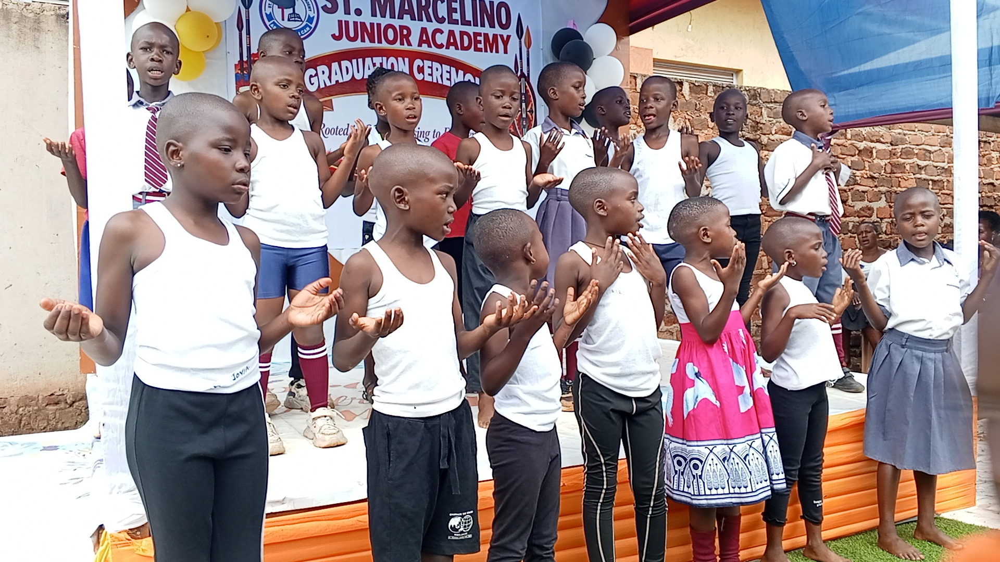

Pupils brought colour and character to Speech Day with a cultural performance that delighted the audience. Traditional outfits and expressive movement helped the children tell a story together.
Preparing for the performance gave pupils a chance to practise collaboration and confidence while celebrating cultural expression. The audience's warm response made the moment even more special.
Colour and creativity in the gallery


